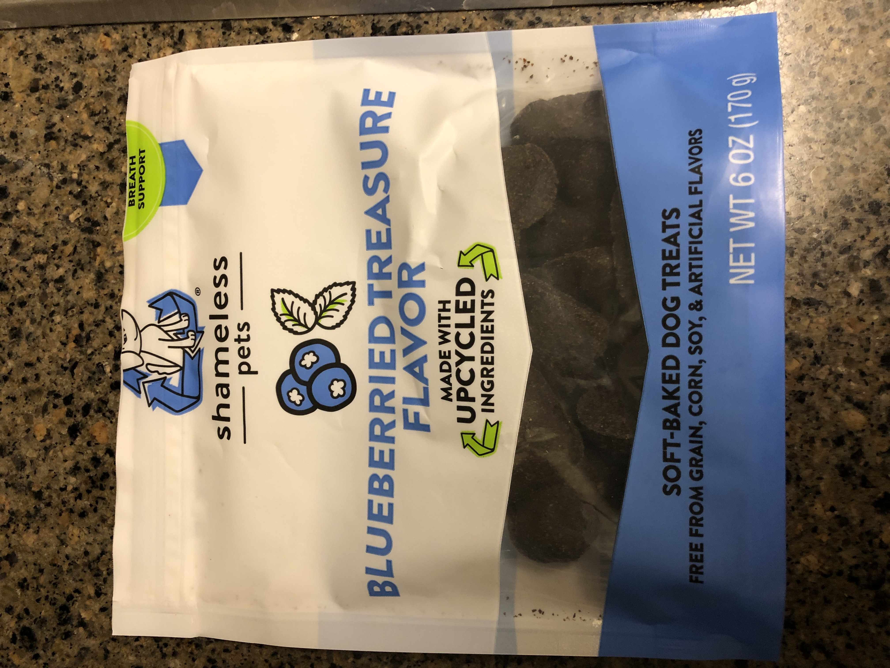
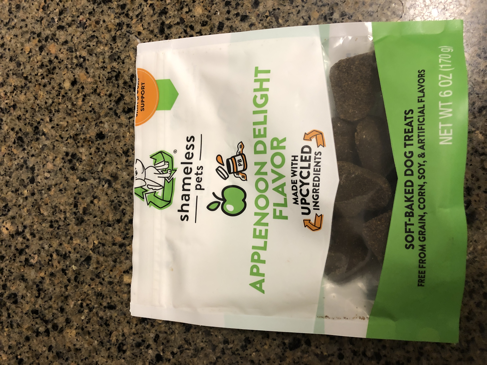
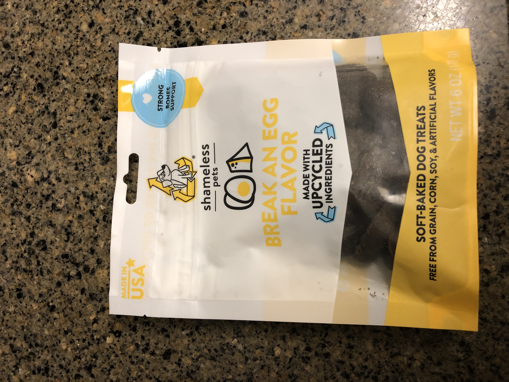
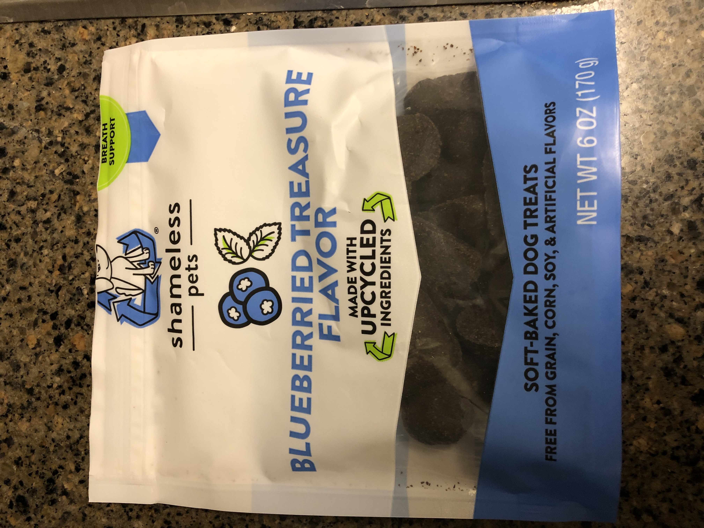
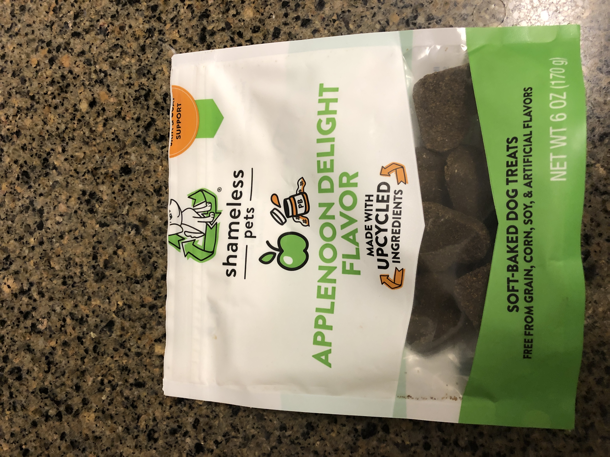
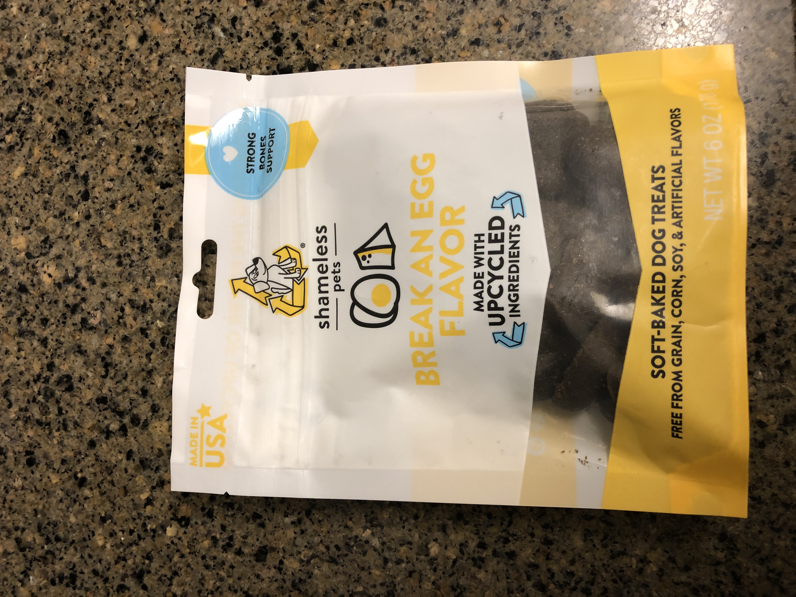

Like most pets Mars and Juno enjoy a treat now and again. On this page there are pictures of the treats we get for them. Juno has realized we keep the treats on top of the refridgerator and she will put her paw to the fridge to tell us she wants a treat, usually accompanied by a bark or two.
The dogs also enjoy the dog park, our local park is the Heflinger Dog Park located on N 112th st. They both enjoy running around with the other dogs although Juno is a bit standoffish sometimes. I think she is getting a bit older and doesn't deal well with puppies. Below are some photos of treats they enjoy, they were all purchased at CostCo and Chewy, an online service that delivers dog food and treats.

 




